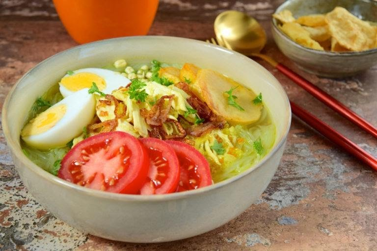

Daftar Resep:
1. Donat
2. Ice Lemon Tea
3. Soto
Cara Membuat Donat

Donat dengan tekstur lembut memang menggoda selera. Nah, berikut ini cara membuat donat goreng yang lembut dan empuk.
Bahan:
300 gram tepung terigu protein tinggi
120 gram tepung terigu protein sedang
1 sdt ragi instan
15 gram susu bubuk
40 gram gula halus
1 butir telur ayam
225 ml air es
30 gram margarin
1 sdt garam
Bahan topping:
Coklat batangan yang dilelehkan
Margarin & gula halus
Selai
Cara membuat donat goreng:
1. Campur tepung terigu, susu bubuk, ragi instan dan gula halus. Aduk sampai tercampur rata.
2. Tambahkan telur dan air es sedikit demi sedikit. Jika ragu adonan terlalu encer maka air bisa dimasukkan beberapa bagian dulu.
3. Uleni adonan sampai menjadi kalis. Adonan kalis adalah tidak ada adonan yang lengket menempel di wadah dan tangan.
4. Masukkan margarin dan garam. Uleni adonan sampai elastis.
5. Tutupi adonan menggunakan kain dan diamkan di tempat hangat suhu ruang selama 15 menit. Setelah 15 menit, adonan mengembang. Tinju-tinju adonan untuk mengeluarkan udara. Uleni lagi sebentar.
6. Ulangi langkah 4 tetapi cukup didiamkan selama 10 menit.
7. Tinju-tinju adonan lalu bentuk adonan menjadi lingkaran. Bisa dibentuk manual dengan tangan setelah ditimbang seberat 40 gram atau giling adonan dan cetak memakai cetakan donat.
8. Letakkan adonan yang telah terbentuk dengan diberi jarak pada wadah datar. Tutupi dengan kain dan diamkan selama 30 menit.
9. Goreng adonan donat dalam minyak panas dan api kecil sampai kuning keemasan. Tiriskan.
10. Setelah donat dingin, beri toping sesuai selera
Cara Membuat Ice Lemon Tea
Bahan
2 buah lemon
Gula pasir (secukupnya)
2 gelas airEs batu (secukupnya)
1 kantong teh
Cara Membuat
1. Rebus air hingga mendidih, masukkan gula dan teh ke dalamnya.
2. Biarkan gula larut, angkat air teh yang telah matang.
3. Peras 1,5 buah lemon dan iris tipis setengah lemon yang tersisa.
4. Masukkan air perasan lemon ke dalam air teh, aduk rata.
5. Masukkan juga lemon yang telah diiris tipis. Biarkan hingga agar dingin.
6. Masukkan es batu secukupnya agar rasanya makin segar dan melegakan.
Ladies, itulah resep membuat es lemon tea manis segar pelepas dahaga untuk berbuka puasa. Resep yang sangat mudah bukan? Selamat mencoba resep ini dan semoga keluarga di rumah suka.
Cara Membuat Soto

Nah ki ini saya akan meberi tahu cara memasak soto ayam lamongan, penasar yuk lihat di bawah ini
Bahan
1ekor (700 g) ayam kampung
2.5L air
5lembar daun jeruk
1sdt garam
1sdt gula pasir
2sdm Bango Kecap Manis Light
2batang serai, memarkan
2cm lengkuas, memarkan
2sdm minyak, untuk menumis
300ml minyak, untuk menggoreng
Bumbu halus
12butir bawang merah
8siung bawang putih
2cm jahe
3cm kunyit bakar
4butir kemiri
1sdm bawang putih goreng
1sdm bawang merah goreng
Bumbu pelengkap
50g suun kering, seduh air hangat, tiriskan
2buah tomat, potong kasar
2batang daun seledri, cincang halus
3butir telur ayam rebus, iris
200g kol, iris halus
sambal rawit
Cara membuatbr
1. Dalam panci, rebus air dan ayam dengan api kecil. Masak hingga ayam matang dan lunak. Saring kaldu dan sisihkan.
2. Panaskan minyak, goreng ayam hingga kecokelatan. Suwir-suwir.
3. Dalam panci, rebus kembali kaldu hingga mendidih.
4. Panaskan minyak, tumis bumbu halus, serai, lengkuas, dan daun jeruk hingga harum.
5. Tuang tumisan bumbu, garam, gula, dan Bango Kecap Manis Light ke dalam rebusan kaldu. Masak hingga mendidih.
6. Tata bahan pelengkap di mangkuk, kecuali sambal. Beri suwiran ayam, siram dengan kuah soto. Sajikan selagi hangat.
Selamat Mencoba